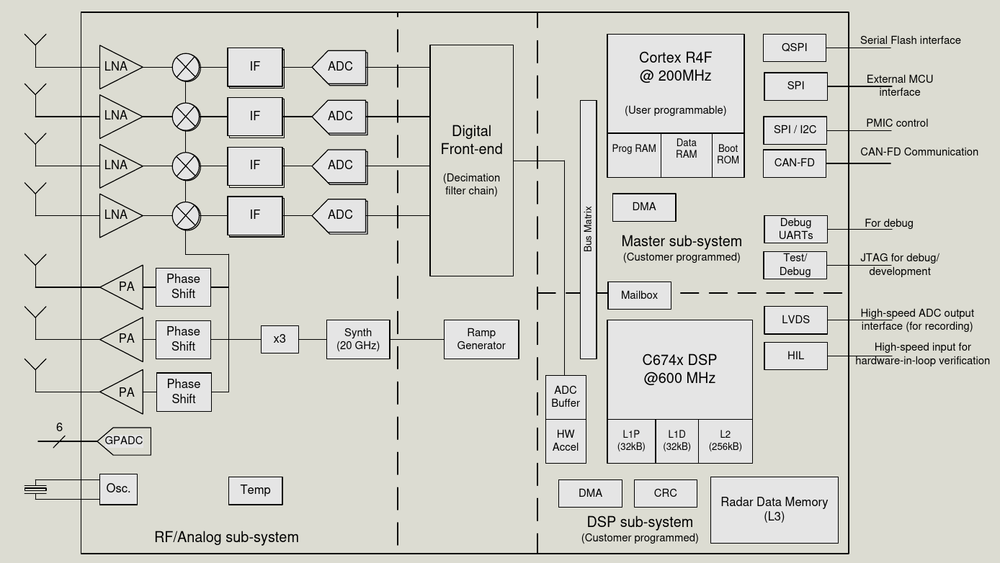
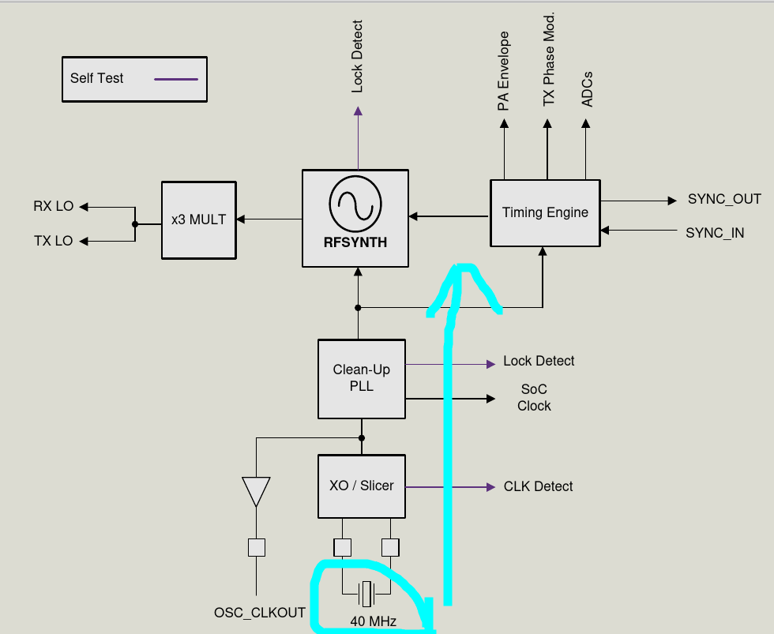
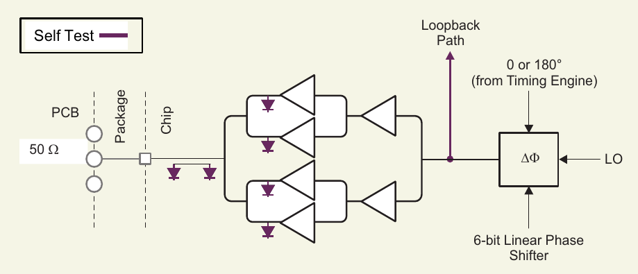
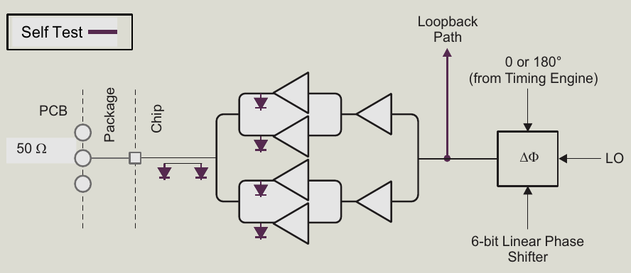
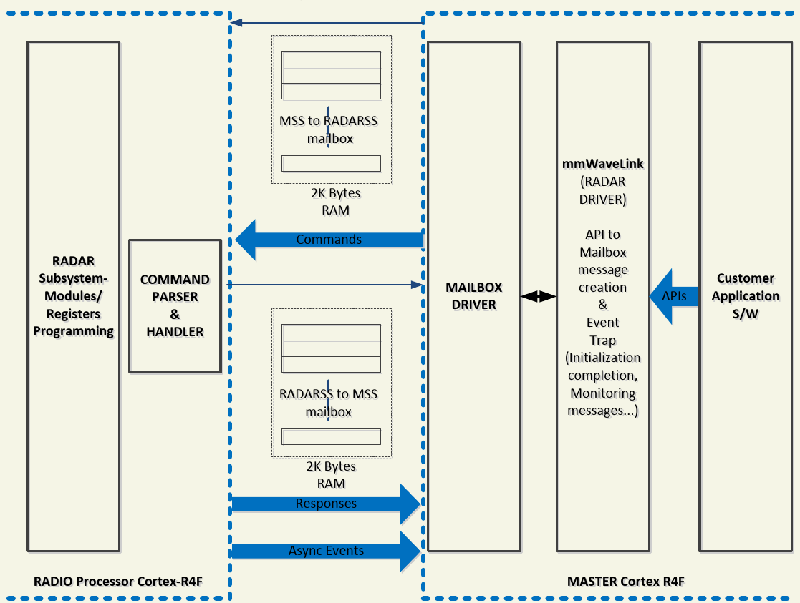
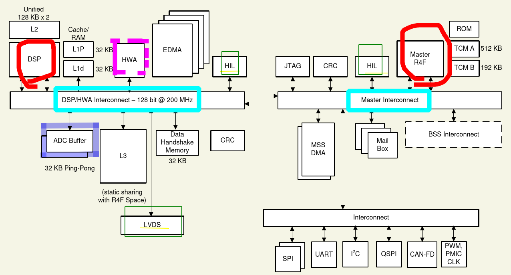

毫米波雷达的选型
器件
经过一段时间的摸索，目前确定还是用国际大厂TI的芯片先练练手。
选择器件为 IWR6843
如前文所述，这是一颗集成式毫米波雷达SoC，主要技术特点：
- 60 - 64Ghz 连续调制，4GHz带宽
- 3TX
- 4RX
- Cortex R4F
- 集成FFT、滤波、CFAR等硬件加速
- 集成C674x DSP
本来想要一颗77G的芯片，因为标称频率范围是76 - 81GHz， 也就是5GHz带宽，不过看详细的文档，似乎有一部分带宽的无线电是被分配给了汽车，所以77G的芯片是两部分带宽，一个1GHz，一个也是4GHz。
当然更重要的一个原因是，目前IWR6843还有一个AoP版本，也就是芯片上直接封装了天线！这对日后自己做产品来说非常有利。几十G的射频电路，别说画了，找个代工厂估计都要费些力气。
所以这次就先选了IWR6843的开发板。
功能框图

RF和模拟模块
时钟域

系统使用一个外部40MHz晶振产生内部所需的各种时钟。
发射电路

IWR6843有三个独立的发射通道。不过同一时间只能同时使用其中的两个。
当使用分时三天线策略时，可以实现3D测定。
设备支持6bit的线性相移以支持MIMO雷达和发射波束成形等应用。
接收电路

IWR6843有四个独立的接收通道，并且可以同时使用。
器件为快速啁啾信号优化，带通的中频信号链支持可配置的滤波，从175KHz至最大10MHz。
雷达子系统处理器
此处理器有其独立的ROM/RAM， 用于执行内置的射频校准程序、底层操作。
用户并不能直接操作这个控制器，TI提供了封装好的固件，使用基于mailbox的API，通过消息机制和整个雷达子系统通讯。

处理器系统

主要来看有两个可编程的大核心：
- 一个Cortex R4F 作为主控
- 200 MHz 时钟频率
- 注意这是Ｒ，不是Ｍ也不是Ａ。
- 一个C674x DSP 作为协信号处理器
- 600 MHz 时钟频率
LVDS将ADC高速同步泵出，可以作为log或者为外部其它处理器提供原始数据。
HIL则是高速信号输入接口。
其中的HWA为雷达硬件加速器，包含了一些FMCW常用的处理硬核，可以降低主处理器负担。
供电
芯片需要4个电源轨:
VDD 数字核心、SRAM
- 1.2v
数字IO
- 3.3v 或 1.8v
射频电源
- 1.3v 或 1.0v(旁路内部LDO)
模拟电源
- 1.8v
其中射频电源和模拟电源如果直接使用开关电源供电，需要额外的LC滤波。
同时芯片有两个电源域，一个是主电源，一个是DSP电源。DSP电源可以动态开关。
可以使用多路的PMIC电源芯片来管理，例如：
- LP87702系列
- LP87524系列
都是给IWR/AWR系列专门设计的PMIC。
整个系统的功耗相对来说还是不低的， 5v总电源轨的话，至少需要2~3A的充沛电流。
芯片本身的热量也相当可观。